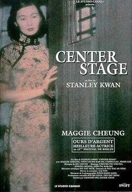

阮玲玉
又名：Center Stage / Actress / Yuen Ling Yuk / The New China Woman
2021北影节 4k修复 导演剪辑版
作品信息
| 导演 | 关锦鹏 |
| 编剧 | 焦雄屏 / 邱刚健 |
| 主演 | 张曼玉 / 梁家辉 / 秦汉 / 刘嘉玲 / 吴启华 / 叶童 / 李子雄 / 张冲 / 叶晨 / 萧湘 / 肖荣生 / 黄达亮 / 沈晔 / 符冲 / 朱琪敏 / 周杰 / 孙栋光 |
| 类型 | 剧情 / 爱情 / 传记 |
| 制片国家/地区 | 中国香港 |
| 语言 | 粤语 / 汉语普通话 / 上海话 |
| 上映日期 | 1991-11-29(中国台湾) / 1992-02-20(中国香港) |
| 片长 | 121分钟 / 154分钟(导演剪辑版) |
| IMDb | tt0102816 |
最后一次看到是 2026-08-12T21:11:26+08:00 · 豆瓣原页